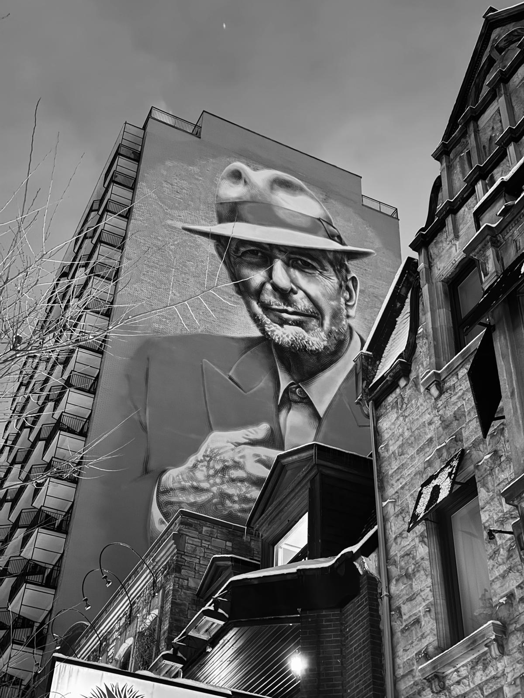
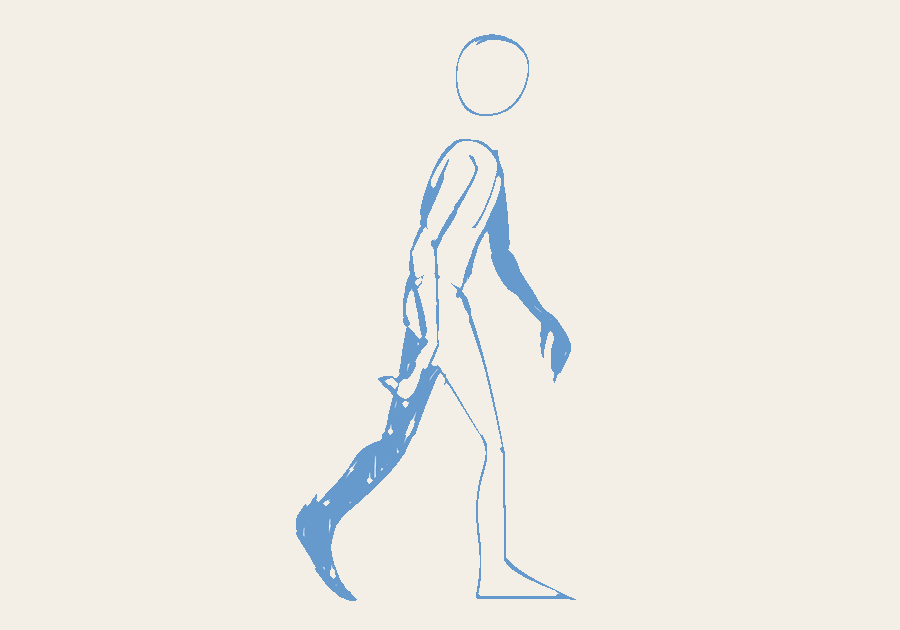

i just got back from canada and i'm currently in my last semester of
courses at the utc. i'm actively looking for a
final-year internship starting september
2026.
i'm about six months behind the “classic” graduation track because i
started a double degree at the
ets - école de technologie supérieure,
located in
montréal,
québec,
canada. although, after a few months i
had to cancel it for personal reasons :/
sadly, i wasn't able to transfer any credits from that stay, but the experience was still extraordinary: i met so many people and discovered so many great places. btw, my favorite spot was café bloc, where i spent countless hours climbing with my friends :)))

montréal, québec, canada
december 6, 2025
